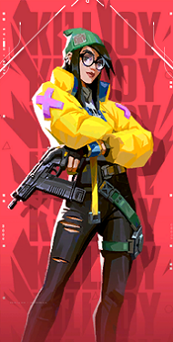

Selecione um personagem
-

- 

Raze
Raze chega do Brasil com uma explosão de carisma e armas enormes. Com seu estilo de jogo porradeiro, ela é craque em desentocar inimigos entrincheirados e limpar espaços apertados com uma bela dose de "BUUUM"